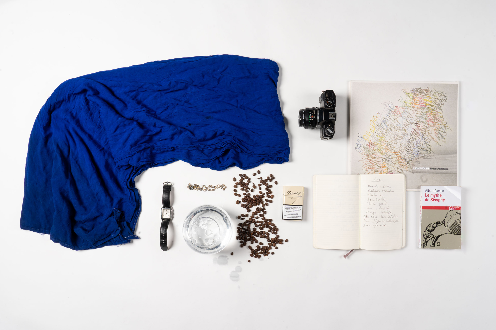

Tristan Adriel Linder, à peu près lausannois, a découvert la photographie à l'occasion de voyages touristiques avec ses parents. Depuis, il explore les aspects manuels de cette pratique dans le but de se reconnecter à l'instant et à lui-même.
Pour en apprendre davantage sur son univers personnel, le portrait en natures mortes révèle, à travers les objets qui l'habitent, ce que les mots ne sauraient dire.